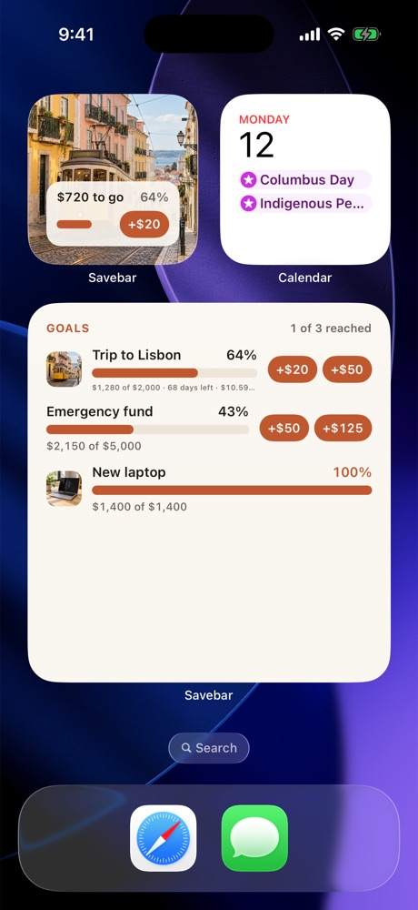

How to put a savings goal on your iPhone Home Screen
Saving for something is easier when you can see it. A widget puts the bar — how much you've saved and how much is left — where you look many times a day, and lets you add to it in one tap.
Here is how to set it up with Savebar. One goal and the Small widget are free.
1. Make a goal
Open Savebar and tap +.
Enter a name and a Target amount.
Optional: turn on “Set a target date” to see the days left and how much to save per day.
Optional: paste a product link under “Link”. The photo and name are filled in from the page.
2. Choose the amount for the widget button
Under “Widget amounts”, enter the amount you usually put aside. The widget's button adds it in one tap, without opening the app.
3. Put the widget on your Home Screen
Touch and hold an empty area of your Home Screen until the apps jiggle.
Tap Edit (or +) in the top corner, then search for “Savebar”.
Pick the Small size and tap Add Widget.
Each time you set money aside, tap the amount button on the widget. The bar and the percentage move right there.

The larger widget in this picture, with several goals, is part of Savebar Pro.
Want more?
Savebar Pro is a one-time purchase, not a subscription:
Unlimited goals
Medium and Large widgets with several goals, and up to two amount buttons per goal
Lock Screen widgets
An Apple Watch app with the same amount buttons
Questions
Does it connect to my bank?No. You add the amounts yourself, so there is no login and nothing to link.
How many goals can I make for free?One, with the Small Home Screen widget. Savebar Pro, a one-time purchase, gives unlimited goals, Medium and Large widgets that show several goals, Lock Screen widgets and an Apple Watch app.
Can I add an amount that isn't on the button?Yes. Open the goal in the app and tap “+ Add” to enter any amount.
How do I choose which goal the widget shows?Touch and hold the widget, tap Edit Widget, and choose the goal.